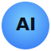

🌌 Welcome to the Vibe IDE
Manifest ✨
Upload ⤒
More ⋮
Pull Vibe 📥
Push Vibe 📤
Random IBM Factoid Please
Save ⤓
Copy ❐
Auto-Deploy
✨ Manifesting your vibe...
Vibe
Vibe Controls
_
□
🌈
⚡
💫
🧘
🌌
✨
🔆
🔉
Remix 🎨
💡 Press
Remix 🎨
to edit your vibe again
Enabled by IBMer Product Teams & IBM Deployable Architectures ✨
